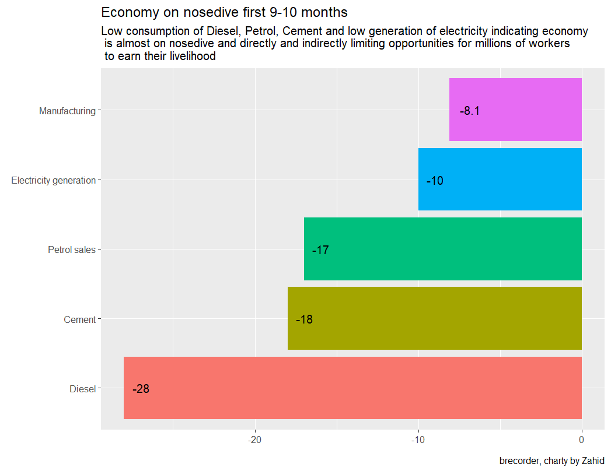
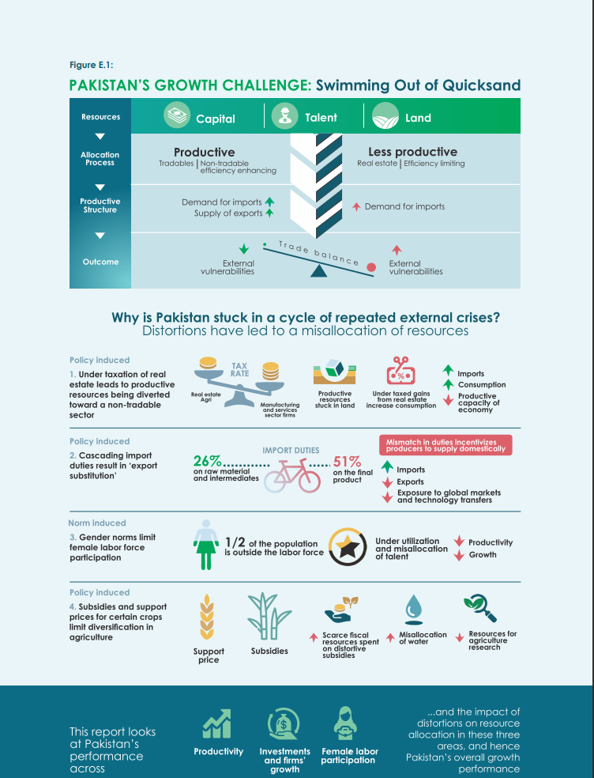
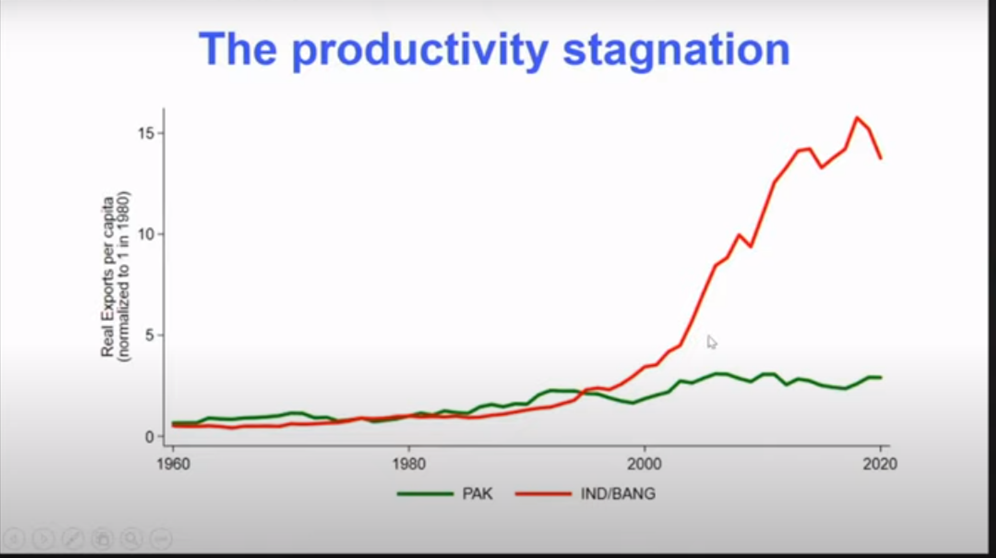
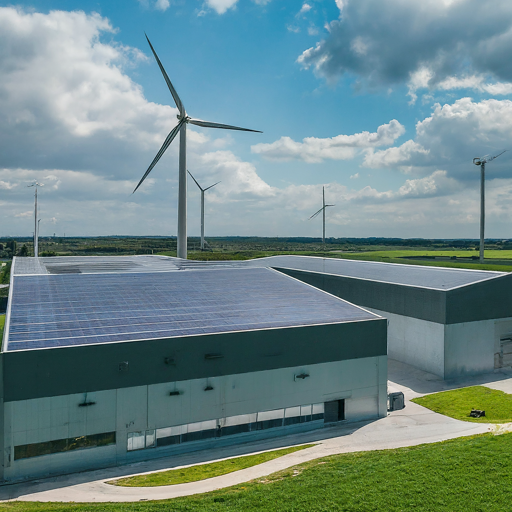

Industrial Policy & The Way Forward
Breaking the Boom-Bust Cycle — Lessons, Comparisons & Reform Agenda
School of Economics, Quaid-i-Azam University, Islamabad
2026-04-06
Part I: The Boom-Bust Trap
Atlas of Economic Complexity

Explore interactively: atlas.hks.harvard.edu/countries/586
Pakistan’s Complexity Ranking
- Economic Complexity Index (ECI) rank: ~99th globally
- Declined 20 places over the last decade
- Export basket dominated by low-complexity products
- Vietnam (+11 places), India (+8 places), Thailand (+9 places) all improved
- Pakistan added 21 new products since 2003 — contributing only $2 per capita
- Vietnam added 48 new products — contributing $1,020 per capita
Countries that export more complex, diverse products grow faster. Pakistan’s declining ECI means it is falling further behind.
Pakistan’s Recurring Crisis Pattern
Pakistan has engaged with the IMF 25 times since 1950. Each stabilisation restores short-run metrics without addressing structural drivers. The cycle is almost certain to repeat.
Based on: Getting Out of the Economic Boom-Bust Cycle — Business Recorder
The Anatomy of a Boom-Bust Cycle
- Import-driven boom — consumption grows, imports surge, GDP rises
- Balance of payments crisis — current account deficit becomes unsustainable
- IMF bailout — austerity, devaluation, demand compression
- Brief stabilisation — inflation falls, reserves rebuild
- Short period of growth — government claims victory
- Crisis returns — structural issues untouched, cycle repeats
“Large trade deficits and even surpluses do not mean something good. Pakistan has gone through this boom and bust many times before. This time is no different.”
Why the Cycle Persists: Consumption-Led Growth
The Structural Problem
Source: USAID / Pakistan Economic Review
- Pakistan’s growth is driven by domestic consumption, not investment or exports
- Focus on light industries (textiles, food processing) — quick profits but low value addition
- Heavy industries (steel, machinery, chemicals) remain underdeveloped
- No transition from consumption-led to investment-led or export-led growth model
- Remittances (~9.4% of GDP) fund consumption, not productive investment
The Consequence

GDP calculation: consumption dominance
- As growth ↑ → imports ↑ → CAD ↑
- CAD pressure forces exchange rate depreciation
- Depreciation raises import costs → inflation
- Central bank raises rates → domestic economy contracts
- Economy stabilises but at lower growth
- Then the cycle begins again…
Structural Not cyclical — this is a design flaw
Light vs. Heavy Industry: Pakistan’s Missing Transition
Pakistan — Stuck in Light Industry
- Textiles & Garments: ~60% of exports; low value addition
- Sports Goods (Sialkot): Limited innovation; commodity pricing
- Leather Products: Basic processing; minimal R&D
- Heavy Industry: Steel, auto, chemicals, machinery — all underdeveloped
- Investment gravitates toward quick-return light sectors
- Skilled labour follows — creating a self-reinforcing trap
What Successful Countries Did
| Country | Strategy | Result |
|---|---|---|
| S. Korea | Deliberate heavy industry push (steel, ships, electronics) | High-value exports, consistent growth |
| China | Balanced heavy + light; massive state investment | World’s manufacturing hub |
| Vietnam | GVC integration via FDI (Samsung, Intel) | Exports 87% of GDP |
| Bangladesh | RMG scaling + female workforce | Exports $55B |
The Core Issue: Manufacturing-led structural transformation requires deliberate industrial policy — it does not emerge from market forces alone in a distorted economy like Pakistan’s.
Price-Wage Spiral & Structural Disequilibrium
Price-Wage Spiral (Light Industries)
- Investment in light industries → rapid growth → labour demand rises
- Workers demand higher wages to match inflation
- Higher wages → higher production costs → firms raise prices
- Cycle continues: wages ↑ → prices ↑ → wages ↑
- Result: Persistent inflationary pressure without productivity gains
Structural Disequilibrium (Heavy Industries)
- Heavy industries have low supply elasticity — can’t scale quickly
- Large capital requirements, long gestation periods
- When demand rises: supply can’t keep up → prices spike → overinvestment
- When demand falls: supply stays high → prices crash → losses and shutdowns
- This lag in adjustment creates the boom-bust dynamic
Combined Effect
When price-wage spirals in light industries meet structural rigidity in heavy industries, you get systemic instability. Managing this requires targeted policy — not market fundamentalism or blanket austerity.
The Critique of Neoliberal Prescriptions
What Has Been Tried
- Austerity measures — suppress demand without fixing supply constraints
- Twin deficit focus — treating symptoms (CAD + fiscal deficit) not the disease
- Market fundamentalism — assumption that price signals alone drive development
- Import liberalisation — without building export capacity first
- 25 IMF programs — same prescriptions, same outcomes
“Addressing symptoms will not cure the disease.”
What the Evidence Shows
- No country has industrialised through austerity alone
- East Asian tigers (Japan, Korea, Taiwan) used active industrial policy
- China’s dual-track pricing in the 1980s — balanced liberalisation with state guidance
- Even the World Bank’s own research now acknowledges the limits of Washington Consensus
- Productivity — not fiscal balance — is the ultimate determinant of prosperity
Productivity The only sustainable path to growth
Productivity Stagnation: The Root Cause

Source: World Bank Pakistan Development Update

Pakistan’s productivity stagnation relative to peers
Pakistan’s aggregate productivity has been stagnant or declining. Farms and firms are becoming less productive over time — particularly family-owned enterprises.
Key Findings (World Bank Pakistan Development Update)
- Yield growth driven by intensive input use, not efficiency gains
- Allocative efficiency: only 18% from better resource allocation, 12% from new firm entry
- Export side: Duty Drawback of Taxes had little impact overall and high cost/benefit ratio
- Reallocation toward products with high subsidy rates → well-established, low-sophistication goods
- Import side: High duties negatively affected firms’ productivity, sales, and wages
- Import duties rose from 15% (FY2010) to 21.3% (FY2020) → higher cost of intermediaries and capital equipment
“Productivity is key in all economic sectors from the point of view of employment, poverty reduction, and export orientation.” — World Bank
Part II: Regional Comparisons
Pakistan in 1960 vs. Today
In the 1960s, Pakistan was 23–24% richer in GDP per capita than the average of China, India, Bangladesh, Indonesia, and Malaysia. Today it has fallen behind all of them.
The Decline in Relative Position
| Decade | Pakistan’s GDP/Capita vs. Peers |
|---|---|
| 1960s | +23–24% above average |
| 1970s | +18% |
| 1980s | +7% |
| 1990s | −34% below |
| 2000s | −20% |
| 2020s | Bottom of peer group |

Source: Our World in Data / World Bank WDI
Compare Pakistan, Vietnam, Bangladesh, India at: ourworldindata.org/grapher/exports-of-goods-and-services-as-a-share-of-gdp
What changed? Others industrialised. Pakistan didn’t. South Korea built ships and semiconductors. China became the world’s factory. Vietnam integrated into global value chains. Bangladesh scaled garments. Pakistan remained trapped in low-value textiles and consumption-led growth.
The Bangladesh Paradox

GDP per Capita (PPP) — Pakistan vs Bangladesh vs Vietnam vs India
Explore: ourworldindata.org/grapher/gdp-per-capita-worldbank
What Bangladesh Got Right
- Garment exports grew from $6B → $55B (2000–2024)
- Kept export tax rates low and competitive
- Built a large trained female workforce for manufacturing
- Garment sector upgraded from basic to mid-value products
- Maintained macro stability without IMF for over a decade
- Per-capita income now higher than Pakistan (PPP-adjusted)
What Pakistan Got Wrong
- Merchandise exports: $9B → ~$32B (same period)
- Raised tax rates on exporters — highest effective rate in region
- Female LFPR: ~24% — massive productive capacity untapped
- Garment sector stagnating at low-value end
- 25 IMF programs — chronic dependence
- Anti-export bias entrenched in tariff structure
The lesson is not ideology — it is execution. Bangladesh didn’t follow a textbook; it picked a sector, kept costs competitive, mobilised its workforce, and stayed the course. Pakistan did the opposite.
The Vietnam Model
Vietnam’s Success Formula
- Exports-to-GDP ratio: 87% — deliberate GVC integration
- Attracted Samsung, Intel, Nike through competitive incentives
- Low effective corporate tax for exporters
- Political stability and policy continuity (debatable model, but consistent)
- Invested in workforce skills and vocational training
- Reliable infrastructure: power, logistics, ports
Preconditions Pakistan Lacks
- ❌ Policy continuity (Finance Minister tenure: <18 months)
- ❌ Competitive energy costs (PKR 34+/kWh vs. Vietnam’s ~$0.07/kWh)
- ❌ Reliable infrastructure
- ❌ Rule of law and contract enforcement for foreign investors
- ❌ Low effective tax burden for export-oriented FDI
- ❌ Functional SEZs (most are real estate projects with SEZ labels)
What Pakistan Could Borrow: Focus SEZs on genuinely export-oriented FDI with tax holidays, fast-track approvals, and dedicated infrastructure — not the current model of giving land to domestic developers.
South Korea: The Institutional Comparison
South Korea’s Path
- Deliberate heavy industry policy in 1960s–80s (POSCO, Hyundai, Samsung)
- Government picked winners and held them accountable — subsidies tied to export performance
- Invested 4.9% of GDP in R&D (vs. Pakistan’s 0.2%)
- Built world-class universities → fed industrial pipeline
- Result: High-value exports, diversified economy, consistent growth
Pakistan vs. South Korea (2024)
| Indicator | Pakistan | S. Korea |
|---|---|---|
| Exports/GDP | 10% | 43% |
| R&D/GDP | 0.2% | 4.9% |
| Industrial share | Declining | Stable |
| Value addition | Low | High |
| Export diversity | Narrow | Broad |
| Boom-bust | Chronic | Eliminated |
S. Korea’s per-capita income was comparable to Pakistan’s in the 1960s. Today it is an OECD member with per-capita income 15× higher.
Part III: The Institutional Question
Extractive vs. Inclusive Institutions
“Why Nations Fail” — Acemoglu & Robinson: Nations fail when their institutions are extractive (serving elites) rather than inclusive (enabling broad-based participation).
Pakistan’s Extractive Institutions
- Insecure property rights — capital flows to non-productive assets
- Entry barriers — regulations and rent-seeking create un-level playing field
- System designed by and for elites — landed, military, commercial
- Weak contract enforcement — deters long-horizon investment
- Policy capture — industrial elites shape tariffs, subsidies, SROs to protect incumbents
- Military’s economic footprint — assets grew from $30B to $39.8B (2016–2023)
What Inclusive Institutions Look Like
- Secure property rights — including for small businesses
- Rule of law — contracts are honoured
- Open markets with state support (public services + regulation)
- Free entry of new businesses
- Access to education and opportunity for the majority
- Meritocracy — allocation of talent based on capability, not connections
The gap is not about knowing what to do — Pakistan’s economists and policymakers understand these principles. The gap is about incentive structures that reward extraction over inclusion.
The “Software” Problem
Pakistan’s development discourse focuses on hardware — SEZs, roads, corridors, pipelines. But what drives growth is software — institutions, rules, capabilities.
The Software Pakistan Needs
- Rule of Law — contracts are honoured, disputes resolved efficiently
- Property Rights — China’s economic takeoff began when property rights changed
- Meritocracy — allocation of talent based on capability
- Organisational & Managerial Capacity — firms that can compete globally
- Knowledge Acquisition — learning, adaptation, innovation
Critical insight: None of this can be bought or imported. It must be built domestically through sustained reform and institutional development. This is why “pipe-nomics” (someone build it for us) doesn’t work.
“It is, perhaps, worth stressing that economic problems arise always and only in consequences of change.” — F.A. Hayek, The Use of Knowledge in Society
Short-Termism: The Myopic Approach
The Pattern
- Successive governments suffer from myopia — optimising for the next election, not the next generation
- Occasional consumption booms from borrowing and remittances (2002–05, 2016–18)
- Growing informal economy weakens state control and erodes tax base
- Pakistan remains “married to the begging bowl”
- Sought FDI without terms — no technology transfer, no export conditions
- “Pipenomics” — expecting others to build Pakistan’s future
Why Governments Don’t Focus on Productivity
- Building domestic capacity requires hard work, local thinking, institution building
- Hiring competent people means ending nepotism
- Results take years, not election cycles
- Much easier to announce megaprojects than reform civil service
- Much easier to raise tariffs than broaden tax base
- Much easier to blame IMF than implement structural reform
“Learning how to catch a fish is harder than asking someone for a fish — but it’s the only way to eat every day.”
Part IV: The Reform Agenda
Government Initiatives & The Reform Imperative

Government initiatives to promote industrial growth — SEZs, renewable energy, infrastructure, and technology adoption
The Window of Opportunity (2025–2026)
A rare convergence: functioning IMF program (37-month EFF) · improved geopolitical ties · falling inflation · rebuilt reserves (SBP: $14.5B) · LSM growing at 5.75%. This window must be used for structural reform.
Why This Window Will Close
- US tariffs on Pakistan at 37% (April 2025) — export competitiveness under further pressure
- Global uncertainty — tighter financial conditions, commodity volatility
- IMF program has a finite horizon — structural reforms must happen within it
- Political cycle — current government’s reform credibility is limited by electoral pressures
- History: Every previous stabilisation was wasted — the reforms never came
“The next crisis burst is not far if this window is wasted.”
The National Industrial Policy Challenge
What the 2023 Industrial Advisory Council Proposed
- Vision of export-led industrial development
- Target: Pakistan’s exports to $100B within five years
- Transition from import substitution to GVC integration
- Address the four structural distortions
Reference: A Futuristic Industrial Policy — Express Tribune
The Reality Check
- FY2025–26 merchandise exports: ~$32B and falling
- $100B target requires tripling exports in 4 years
- No precedent exists for this without massive institutional reform
- “Economics is not moved by slogans. Without structural reform, this is less a strategy than a sandcastle.”
What a Credible Policy Needs
- Remove anti-export bias — rationalise tariffs per National Tariff Policy (FY25–30)
- Competitive energy — industrial tariffs at regional parity
- Genuine SEZs — export-oriented, not real estate schemes
- Tax incentives for exporters — lower effective rates, not higher
- Female workforce mobilisation — from 24% LFPR to 40%+ over a decade
- R&D investment — from 0.2% to at least 1% of GDP
- Digital public infrastructure — formalise the economy
Immediate Reforms (0–12 Months)
🔴 Abolish super tax on corporations — Pakistan’s effective corporate rate (39%+) is among the highest in the region. Replace with credible medium-term revenue plan.
🔴 Tax the untaxed — agriculture income on large holdings (>25 acres), large retail, real estate capital gains. Pass the non-filer elimination bill.
🔴 Reduce income tax on salaried workers and exporters — current rates drive brain drain and incentivise underreporting. Lower rate + broader base = more revenue.
🔴 Implement National Fiscal Pact (Sept 2024) — provinces must fund their share of development and social spending.
🔴 Follow through on PIA privatisation — essential for market signalling and SOE reform credibility.
Medium-Term Structural Reforms (1–3 Years)
🟠 Energy sector overhaul — resolve circular debt through tariff reform, DISCO privatisation, IPP contract renegotiation. Bring industrial tariffs to regional parity.
🟠 Export diversification — identify 3–5 sectors with revealed comparative advantage:
- Surgical instruments · IT/ITeS · Pharmaceuticals · Halal food · Value-added textiles
🟠 Industrial policy reform — replace blanket import protection with time-bound, performance-conditional support. Neutral incentives between domestic and export markets.
🟠 Female labour force participation — from 24% to 35%+. Targeted interventions: childcare, transport safety, skills training, equal inheritance enforcement.
🟠 Reduce government size — consolidate federal ministries, eliminate ghost employees, digitise service delivery, reduce federal wage bill as share of revenue.
Long-Term Institutional Investment (3–10 Years)
🔵 Human capital revolution — reduce learning poverty, align higher education with labour market, invest in STEM and vocational training.
🔵 Independent civil service and judiciary — policy continuity and investor protection require institutions that outlast individual governments.
🔵 Climate resilience infrastructure — flood defences, water pricing, clean energy transition. Climate adaptation is an economic imperative.
🔵 Digital public infrastructure — URAAN Pakistan Digital Pillar + World Bank DPI support: formalise economy, broaden tax base, improve service delivery.
🔵 R&D ecosystem — from 0.2% to 1%+ of GDP. University-industry linkages, patent frameworks, technology parks with real tenants.
The World Bank’s Four Recommendations
The World Bank’s “Reviving Pakistan’s Exports” report identifies four priorities — See also: Raising Pakistan’s Exports: The Way Forward
Gradually reduce effective protection through a long-term tariff rationalisation strategy to encourage exports
Reallocate export financing away from working capital and into capacity expansion through the Long-Term Financing Facility
Consolidate market intelligence services — support new exporters and evaluate the impact of current interventions
Design a long-term strategy to upgrade productivity of firms that fosters competition, innovation, and maximises export potential
The pattern: Administration after administration applies the same standard instruments without empirical evaluation of their effectiveness — partly because the same faces head ministries from one government to another. The most influential industries survive, while the economy stagnates.
Getting the Basics Right
What People Wish For
- High revenue
- High exports
- High growth
- Stable exchange rate
- Low inflation
“Economy is not rocket science!”
But wishing for all good things is not economics. Economics is about trade-offs — and Pakistan’s political economy consistently avoids the hard trade-offs.
What Actually Matters
- Securing property rights — the foundation of investment
- Strengthening contracting — the foundation of trade
- Reducing transaction costs — the foundation of efficiency
- Removing rent-seeking incentives — and replacing them with entrepreneurship incentives
- Good governance — without it, no wish list materialises
“Without good governance, plan after plan will fail — as they always have.”
The Bottom Line: Pakistan doesn’t lack plans. It lacks the institutional capacity and political will to implement them. The challenge is not what to do — it is how to build the coalitions and institutions that make reform stick.
The Hayek–Sen–Lucas Framework
Why Economic Growth Matters
Hayek:
- Freedom and individual rights
- Knowledge acquisition and sharing
- Enabling collaboration and networking
- Reducing transaction costs
Lucas (1988):
“Once you start thinking about the growth of nations, it is hard to think about anything else.”
Amartya Sen:
- Development as freedom — capabilities, choices
- Freedom to think, to choose, to be productive
What This Implies for Pakistan
- Growth requires creative cities — tolerance, diversity, openness
- F-16 Protocol economic corridors (China, Saudi) are hardware — necessary but not sufficient
- Government needs equal commitment to software: freedom, tolerance, rule of law, diversity
- Current obstacles: intolerance, lack of property rights, social injustice, inequality
- The journey is hard and long-term — there are no shortcuts
Production Over Commerce — Always
The Bottom Line
Pakistan’s current “achievements” — falling inflation, primary surplus, rebuilt reserves — are largely cyclical, not structural. They reflect demand destruction, import compression, and the passing of the global commodity shock — not a genuine transformation.
The country stands at a rare inflection point: a functioning IMF programme, improved geopolitical ties, and a brief window of financial calm.
This window must be used to:
- Broaden the tax base and stop crushing the formal economy
- Resolve the energy crisis that makes manufacturing uncompetitive
- Build genuine export competitiveness — not with slogans, but with structural reform
- Invest seriously in human capital — the only sustainable growth driver
Without these reforms, the next bust is a question of when, not whether.
“All of us have to come out of our comfort zone and encourage discussion and debate.”
Prof. Dr. Zahid Asghar · School of Economics · Quaid-i-Azam University · Spring 2026
Industrial Policy & Way Forward · Prof. Dr. Zahid Asghar · QAU